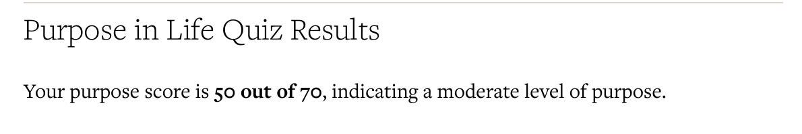
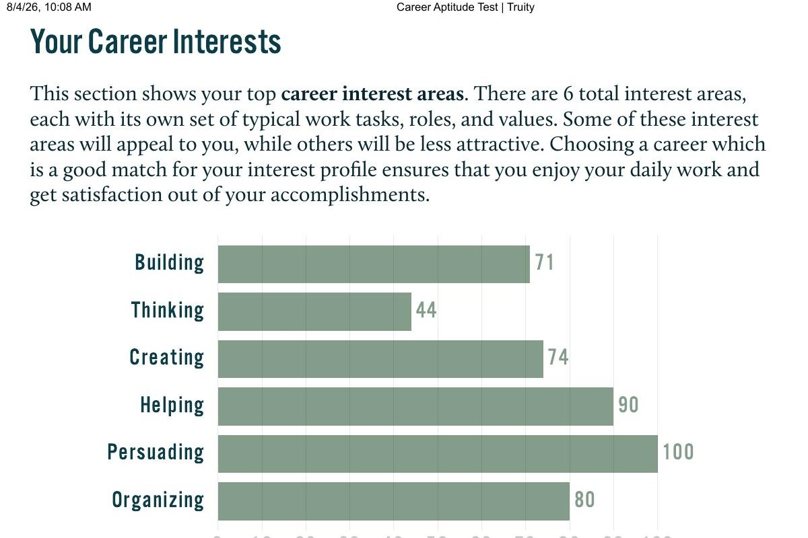
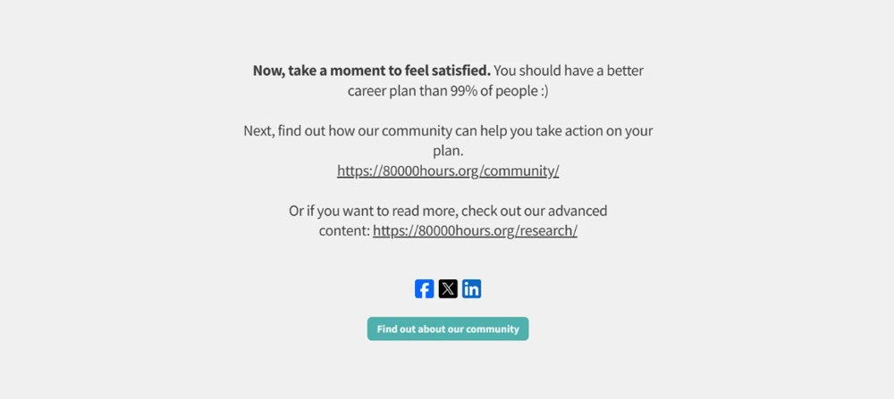

Management Trainee — People & Culture
I'm building a career in Human Resources — starting from the ground up in HR administration at ABC Trade & Investments, and studying Management at Edith Cowan University.
About
I'm currently a Management Trainee at ABC Trade & Investments, a Sri Lankan diversified conglomerate, where I work across HR administration and organisational support for divisions including Jays Leisure & Hospitality and the Life Change Foundation. I'm completing a double major in Management and International Business at Edith Cowan University, on top of an earlier Diploma in Commerce. My focus going forward is People & Culture — I want to be the person who makes a workplace function better for the people inside it.
Academic record
Currently enrolled in SBL2800.3 — Professional Engagement & Planning (Student ID: 10729247), the unit this website was produced for.
Completed the Foundation of Commerce pathway ahead of entry into the Bachelor of Management.
Completed secondary schooling with results across A, C, and S grades.
Track record
Supported employee wellbeing and Rewards & Recognition initiatives — planning engagement activities, mental-health-focused programs, and appreciation events. Partnered with management to foster a positive workplace culture and support morale, motivation, and overall satisfaction.
Assisted in managing lodge, village, and property operations — supporting daily operations and guest services, and coordinating with travel agents on bookings, check-ins, and inquiries.
Conducted market analysis for a mock product launch, identified target customer segments, and designed a promotional strategy aligned with consumer needs and market trends.
Evidence, not vibes
A moderate sense of purpose — clear on what I value, still building the goal-directedness and larger vision that turn a job into a calling.

Core values: influence, leadership, achievement. Top matches included HR Manager, HR Specialist & Training/Development Manager.

Edit me: swap in your actual Plan A / Plan B / Plan Z from the tool. Example shape below — replace the text.
Plan A: HR Generalist role within a mid-size organisation.
Plan B: Continue in management/administration with HR responsibilities.
Plan Z: Administrative support role while I re-plan.

500-word reflection
As a Management Trainee at ABC Trade & Investments, currently working across HR administration and broader organisational support, my career identity is still very much under construction. Completing the Claremont Purpose Quiz, the 80,000 Hours career planning tool, and Truity's Career Aptitude Test has given me a clearer, evidence-based sense of where I am heading: a career in Human Resources and People & Culture.
Boyle's (2022) research on Millennials' graduate transition to work (GTW) offers a useful lens for this stage. Boyle identifies four themes of identity work: restraining the ideal self, reasserting the ideal self, revising the ideal self, and re-exploring possible selves. I recognise myself most in the "re-exploring possible selves" theme — I began my traineeship without full clarity on my direction, and it is through hands-on HR-adjacent tasks that I am actively testing and revising the kind of professional I want to become, rather than following a fixed plan.
My Truity results reinforced this direction empirically rather than just intuitively. My highest-scoring interest area was Persuading (100/100), followed by Helping (90) and Organizing (80), with core values of influence, leadership, and achievement, and traits described as assertive, confident, and ambitious. Human Resources Manager, HR Specialist, and Training and Development Manager all appeared among my top career matches, which suggests HR is not just a circumstantial choice but genuinely aligned with my working style.
My Purpose in Life score (50/70) indicated a "moderate" sense of purpose, with room to grow — particularly around goal-directedness and connecting my work to a vision larger than myself. Duffy and Dik (2013) argue that perceiving one's work as a calling is strongly linked to career decidedness and self-clarity. This matched my own experience: I can see the value of HR work in principle, but I have not yet fully articulated how my day-to-day tasks connect to a larger purpose — something I intend to build deliberately rather than wait to discover.
[Insert 1–2 sentences on your specific 80,000 Hours result here, and how it compares with your HR direction — replace this note once added.]
To convert these insights into an active career identity, I am drawing on Savickas and Porfeli's (2012) career adaptability model, which identifies concern, control, curiosity, and confidence as the resources needed to navigate career transitions. Practically, this means treating my traineeship as a space for curiosity — seeking exposure to different HR functions — and control, by setting concrete goals such as pursuing an HR-focused certification.
I am also applying Tomlinson's (2017) graduate capital model, particularly identity capital — the self-awareness and professional narrative that signals employability to organisations. Gorbatov et al.'s (2018) systematic review of personal branding literature reinforces this: a coherent, consistently presented professional identity, such as an aligned LinkedIn profile and portfolio, functions as a genuine career asset rather than simple self-promotion.
Over the next year, I plan to use these frameworks actively: seeking HR-specific projects within ABC Trade & Investments, pursuing a relevant certification, and continuing to refine my personal brand so that my external presentation matches the HR identity I am building internally.
60 seconds
Replace this block with your embedded video
(YouTube unlisted / Vimeo / uploaded file)